Métodos Cuantitativos I
2026-04-24
Tabla de contenidos
- Síntesis sesión anterior
- Formulación del problema y pregunta, objetivos y relevancias
- Especificación de la posición teórica
- Ejercicios
01. Síntesis sesión anterior
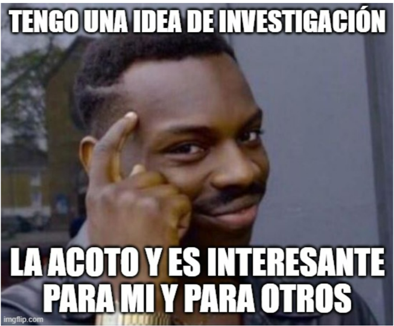
De la Idea a la Pregunta
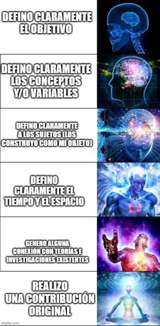
¿Qué hemos visto?
- ¿Qué diferencia la investigación en ciencias sociales y el conocimiento ordinario?
- ¿Cuál es la diferencia entre la interpretación paradigmática y estratégica a la hora de analizar la investigación cuantitativa?
- ¿Cuáles son las diferencias generales ente la investigación cualitativa, la cuantitativa y mixta?
- ¿De donde vienen nuestras ideas de investigación y cómo desarrollarlas?
- ¿Qué implicancias tiene medir en Ciencias sociales?
- A pesar de la posibilidad de asumir una visión estratégica, medir tiene implicancias: existe un proceso de reducir la realidad a números.
¿Qué hemos visto?
- ¿Cuáles son las distintas teorías de la medición y porqué en Ciencias Sociales se utiliza mayormente la Teoría Representacional?
- ¿Cuáles son los “niveles de medida” y cómo se caracterizan?
- ¿Por qué en Investigación Cuantitativa usualmente se mide de forma indirecta?
- ¿Por qué en Investigación Cuantitativa usualmente se mide de forma indirecta?
- ¿Qué son las ideas de investigación y cómo pasar de ellas a problemas investigables?
- ¿Qué es el diseño de investigación y cuál es su diferencia con el proyecto de investigación?
- ¿Cuáles son las etapas del diseño de investigación?
- ¿Qué es la pregunta de investigación y qué características debe tener para ser una buena pregunta?
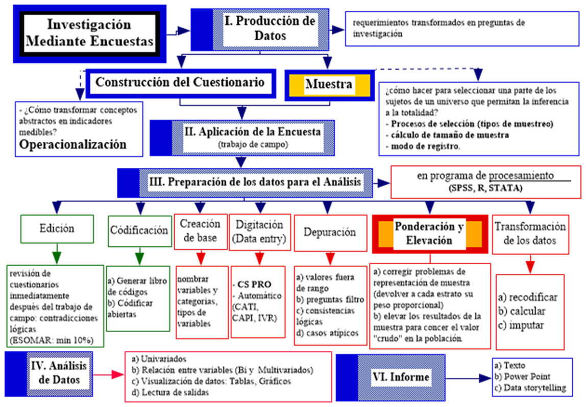
# 02. Formulación del problema y pregunta, objetivos y relevancias {background-color=“#4B0082”}2.1 La pregunta en el problema
Enunciar el problema:
1.1 Describir hechos e investigaciones en relación con problema (¿Qué está pasando?) mostrar que es factible observar/medir: e.g. existen cambios en los modos de vincularse con la política, lectura, música en los/as jóvenes; que se han tratado de las siguientes maneras (x, y, z) y se ven influidos por (e,f,h)
1.2 Dar cuenta de la relevancia de los hechos y vinculo con otras variables: e.g. estos hechos permiten adentrarnos en: formas de subjetividad, hacer colectivos, relacionarse con los objetos culturales… entre los/as jóvenes de XX, en XX. Lo que sería importante para entender/explorar por XX.
Formular el problema (Pregunta de Investigación)
Redacción Clara
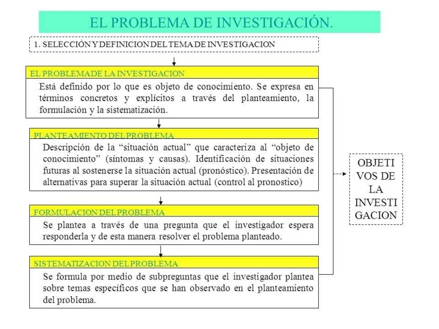
Cuatro pasos para problematizar (Cyril Lemieux)
1. La creencia compartida (Sentido Común):
identificar qué es lo que la mayoría de la gente da por sentado (la naturalización de un fenómeno):
El objetivo: Capturar la explicación que hace que el fenómeno parezca “obvio” o “normal”. Mecanismo: Suele ser una explicación psicologizante (depende del carácter de la persona) o naturalista (es instinto, es biología).
- e.g. “el suicidio es individual”.
2. Inferencias lógicas (¿Qué debería pasar si eso es cierto?):
Si la creencia del paso 1 es una verdad absoluta, entonces el mundo debería comportarse de cierta manera medible.
El objetivo: Crear una predicción basada en la creencia compartida. Mecanismo: Un razonamiento tipo “Si A es cierto, entonces deberíamos observar B”.
- e.g. Se puede esperar que… “la tasa de suicidios varie y no tenga regularidad”
Cuatro pasos para problematizar (Cyril Lemieux)
3. Mostrar Hechos que Contradicen (La “Ruptura”):
Mostrar hechos que los contradicen (2) [realidad observada es contradictoria a 2]: Aquí presentas datos, estadísticas u observaciones empíricas que demuestran que lo que se predice en el paso 2 no ocurre en la realidad.
El objetivo: Desnaturalizar el fenómeno. Hacer que lo que parecía “normal” ahora se vea como algo “extraño” o “anormal”. Mecanismo: Contrastar la inferencia lógica con la realidad observada. (Aparece carácter parcial/erróneo de razonamientos, hacerlos antinaturales/ a-normales: lo que se juzga natural)
- e.g. Pero… “la tasa de suicidios es regular”
4. La pregunta de investigación:
Si el paso 1 dice ser verdad, pero el paso 3 demuestra lo contrario, tenemos una paradoja. El paso 4 es la pregunta que surge de esa tensión.
4.1 La Tensión: Se pregunta formalmente: ¿Cómo es posible que, si creemos que el fenómeno es individual (Paso 1), observemos regularidades sociales tan fuertes (Paso 3)?
4.2 Buscar respuesta social(Lo social explica lo social): no busques la respuesta en la psicología del individuo. Debes buscar las causas en la estructura social, en las instituciones, en las normas o en la economía.
Simetría: Tratar por igual los éxitos y los fracasos de la creencia inicial para entender por qué persiste.
4.3 Reconstrucción vía plan analítico: No se trata de decir que la creencia inicial era “mentira”, sino que era parcial. El nuevo enfoque (tu investigación) permitirá integrar esa contradicción.

Ejemplo: Encuesta Nacional de Participación Cultural (MINCAP)
Problematización: - Desigualdades sociales afectan al consumo (visión tradicional) - Esto haría pensar que las clases populares, minorías o subalternos no consumen cultura. - Sin embargo, si hay “cultura” en las clases populares: desde las rancheras, la música urbana. - ¿Cómo entender otras manifestaciones culturales?
Propuesta: pasar del estudio del consumo cultural a la participación cultural; del DERECHO a la CULTURA; a LOS DERECHOS CULTURALES.
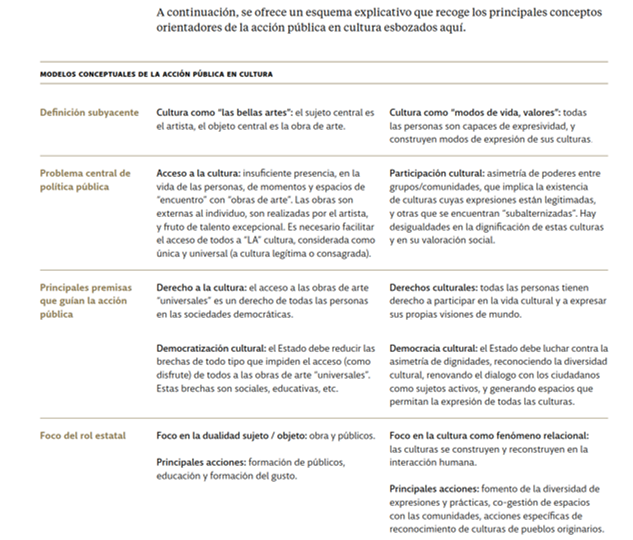
Problema y Preguntas
La Encuesta Nacional de Participación Cultural 2017 se propone (1) identificar y visualizar cómo los chilenos vivencian, evalúan y configuran sus prácticas culturales actuales (2) en un contexto con altos niveles de desigualdad y exclusión social, pero con una ampliación acelerada del consumo-participación cultural gracias a las políticas de acceso así como también por las nuevas tecnologías de la información.
En síntesis, esta Encuesta Nacional de Participación Cultural busca dar respuesta a preguntas tales como: ¿qué nuevos perfiles de consumidores culturales han surgido en el Chile actual? ¿Cuáles son sus características, prácticas e identificaciones culturales? ¿Qué nuevas formas de equidad y/o desigualdad cultural han emergido en los últimos años a partir de la expansión tecnológica? ¿Qué datos nos permiten pensar e imaginar procesos de inclusión social y cultural en base a una democracia cultural contemporánea?
2.2 La unidad de análisis
La unidad de análisis es a quién (o qué) queremos estudiar; a quién (o qué) queremos examinar para establecer una descripción o una explicación con respecto a fenómenos que le suceden.
Pueden ser:
- Individuos (los estudiantes, las madres solteras, los maestros, los trabajadores, etc.)
- Grupos (familias, parejas, pandillas, ciudades, regiones, países, etc.)
- Organizaciones (congregaciones religiosas, universidades, ramas del ejército, ministerios, etc.)
- Objetos Sociales, ya sea:
- Objetos concretos (libros, diarios, canciones, edificios, editoriales de diarios , etc.)
- Relaciones sociales (los matrimonios, los divorcios, las manifestaciones estudiantiles, las revoluciones, etc.)
- Las unidades de análisis no siempre coinciden con la ‘unidad de observación’ (pues no siempre podemos observarlas directamente):
- Características del hogar informado por uno de sus miembros
- ¿Se le ocurre alguna unidad de observación que informa de alguna unidad de análisis?
Un estudio puede tener más de una unidad de análisis. etc.
- CASEN:
Hogares: Se consideran miembros de un hogar a todas aquellas personas que, siendo residentes de una misma vivienda, pueden tener o no vínculos de parentesco entre sí y habitualmente hacen vida en común, es decir, se alojan y se alimentan juntas. Dicho de otra forma, habitan en la misma vivienda y tienen presupuesto de alimentación común.
Núcleo familiar: Un núcleo familiar es una parte de un hogar (es decir, un subconjunto de sus miembros) y puede estar constituido por una persona sola o un grupo de personas. Comúnmente corresponden a parejas o adultos/as junto a una o más personas que dependen de ellos/as. Puede ocurrir que en un hogar exista uno o más núcleos familiares.
Personas
¿Cuáles son los principales problemas de los/as colegios pensados desde directores/profesores y estudiantes?
- ¿Cuál es la ‘unidad de análisis’?
- ¿Cuál(s) es(son) la(s) ’unidad(es) de observación?
2.3 Objetivos
¿Qué son los objetivos?
Operaciones de conocimiento necesarias para responder a la pregunta de investigación (no son operaciones técnicas)
Es el ¿PARA QUÉ? De la investigación
2.3 Objetivos
- Son una desagregación de la pregunta de investigación, desde lo más general a lo más especifico
- Todos los objetivos deben estar referidos a la pregunta (evitar el problema de la inclusión) Dos tipos de objetivos:
- Objetivos generales refieren a grandes operaciones analíticas
- Objetivos específicos refieren a operaciones más específicas (no pueden exceder al general, lo DESAGREGAN).
- Se vinculan a tareas de investigación específicas. Utilizar verbos en infinitivo como: determinar, conocer, describir, caracterizar…
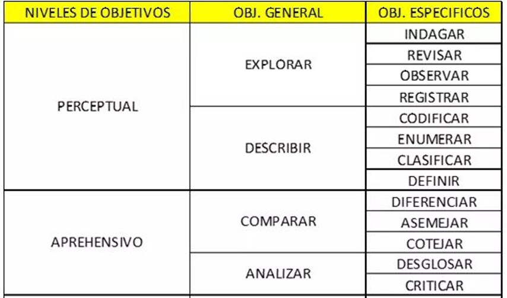
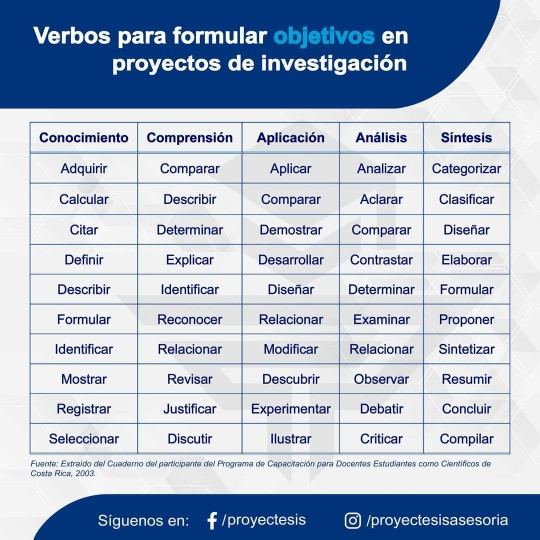
Ejemplo 1
- Objetivo General:
- Conocer la relación que existe entre ‘satisfacción con la vida’ y ‘clase social subjetiva’ de los/as chilenos, según ‘nivel socioeconómico’.
- Objetivos Específicos:
- Determinar el “nivel de satisfacción con la vida” que presentan los/as chilenos/as.
- Caracterizar la “clase social subjetiva” de los/as chilenos/as.
- Establecer la influencia del “nivel socioeconómico” en la “satisfacción con la vida” de los/as chilenos/as
- Analizar la influencia del “nivel socioeconómico” en la “clase social subjetiva” de los/as chilenos/as
- Determinar la influencia del “nivel socioeconómico” en la relación que existe entre “satisfacción con la vida” y la “clase social subjetiva” de los/as chilenos.
2.4 Relevancias
¿Por qué es importante hacer está investigación? (más allá de mis intereses) Mi caso, es un caso de qué….?
Tres tipos de relevancias:
- Relevancia teórica (aporte en términos de conocimiento teórico)
- Relevancia práctica (aporte en términos de intervención social)
- Relevancia metodológica (aporte al instrumental técnico de la disciplina)
Ejemplos:
- Entregar soporte empírico a la teoría X sobre violencia… -Contribuir a la formulación de políticas públicas que busquen intervenir en la experiencia de violencia en el aula
- Contribuir al diseño de indicadores sobre prácticas de agresividad
03. Especificación de la posición teórica
3.1. El Marco Teórico
El objetivo es explicitar el punto de vista
¿Por qué es clave?
- Permite delimitar el tema
- Permite enlazar la investigación a una tradición
- Permite asegurar que no se estudia algo conocido
- Permite establecer las hipótesis
- Entrega los criterios para el análisis
Un buen marco teórico:
Muestra el estado del arte teórico actual (teorías y líneas de investigación)
Hace una conexión con lo empírico
Explicitar la postura adoptada
Entrega las definiciones conceptuales de los conceptos centrales
Niveles de abstracción en el marco teórico (Sautú)
Paradigma: (+ o - Filosofías)
- Sistema de creencias básicas que determinar el modo de orientarse y mirar la realidad (similitud nivel ontológico): Sustancialismo, relacionalismo social, realismoTeorías generales: (+ o – Teoría Antropológica)
- Proposiciones lógicamente interrelacionadas que se utilizan para explicar procesos y fenómenos. Visión de sociedad, lugar de personas y características todo y partes: Estructuralismo, Funcionalismo, Culturalismo, Marxismo, etc.Teorías sustantivas: (Investigaciones específicas/empíricas de sus temas)
Proposiciones teóricas específicas a la parte de la realidad que se pretende estudiar.
Permiten definir objetivos específicos de la investigación y orientan etapas del diseño
Al redactar el MT (en su trabajo! -> guarde esta diapositiva):
Incorporar una pequeña introducción, en que se explique qué conceptos se revisarán
Ordenar los temas en un discurso coherente, partiendo de los descriptores más generales a los más específicos (usar subtítulos). Al final, hacer una síntesis donde se aclara la postura adoptada
RECORDAR! Los conceptos teóricos en la M.C, se traducen a variables, por lo tanto, las definiciones conceptuales deben ser precisas y permitir la operacionalización posterior de los conceptos
Estrategias para Organizar el Marco Teórico: Más allá del listado de autores
- Organización por Enfoques o Paradigmas: En lugar de presentar autores aislados, es mejor agruparlos según la “lente” con la que observan la realidad.
Cómo hacerlo: Clasificar a los autores en grandes corrientes (ej. sistémicos, estructuralistas, racionalistas, constructivistas).
Ventaja: Permite al lector entender desde qué posición epistemológica se está hablando sin necesidad de ser un experto en cada autor.
Estrategias para Organizar el Marco Teórico: Más allá del listado de autores
- Organización por Variables Explicativas (Divergencias Causales).Este criterio se centra en el porqué de las cosas. Identifica qué causas prioriza cada grupo de autores para explicar el fenómeno.
Agencia vs. Estructura: ¿El fenómeno ocurre por decisiones individuales o por determinantes sociales/institucionales?
Coyuntura vs. Trayectoria: ¿Se explica por un evento puntual del presente o por un proceso histórico de largo aliento?
Factores Internos vs. Externos: ¿La causa está dentro del sistema estudiado o viene de presiones externas?
Estrategias para Organizar el Marco Teórico: Más allá del listado de autores
- Organización por Ámbitos o Dimensiones de la Sociedad. Ideal para temas multidimensionales. Consiste en dividir la revisión según el “sector” de la realidad que se analiza.
Dimensiones: Análisis desde lo político, lo económico, lo cultural o lo social.
Ventaja: Ayuda a cubrir el fenómeno de manera integral y organizada.
Estrategias para Organizar el Marco Teórico: Más allá del listado de autores
- Organización por Influencia de los Clásicos (Linaje Teórico)Casi toda la teoría contemporánea tiene raíces en los padres fundadores de la disciplina.
Cómo hacerlo: Identifica si los autores revisados tienen una marcada herencia marxista, weberiana, durkheimiana o parsoniana.
Ventaja: Revela la genealogía de las ideas y la coherencia interna de los argumentos.
3.2 Las hipótesis
Respuesta anticipada El objetivo es explicitar el punto de vista
- Son afirmaciones que hace el investigador en base a la teoría, prejuicios o su expertise sobre el tema, con respecto a los resultados que va a obtener la investigación
- En el método científico tradicional permiten comprobar/refutar teoría
- En términos generales: permiten “enfocar” mejor el proceso de investigación
Toda hipótesis debe
- Tener claramente definidos sus conceptos teóricos
- Tener claros sus referentes empíricos
- Tener clara su área de refutación y verificación
El valor heurístico de una hipótesis no recae en su verificación. ¡La refutación también es un resultado interesante!
3.2 Las hipótesis
Ejemplos:
Hipótesis general
La relación entre “clase social subjetiva” y nivel de “satisfacción con la vida” de los/as chilenos/as está mediada por “nivel socioeconómico”.
Hipótesis específicas
Existe relación entre la “clase social subjetiva” y el nivel de “satisfacción con la vida” de los/as chilenos/as.
*Existe relación entre el “nivel socioeconómico” y el “nivel de satisfacción con la vida” de los/as chilenos/as*.
*Existe relación entre el “nivel socioeconómico” y la “clase social subjetiva’ de los/as chilenos/as.*
3.2 Las hipótesis
En la investigación cuantitativa, las hipótesis refieren al comportamiento esperado de variables. Hay distintos tipos:
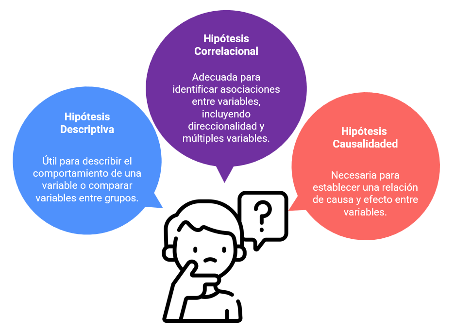
3.2 Las hipótesis
1. Hipótesis descriptiva
- Hipótesis descriptiva de una variable. Ejemplo: El comportamiento de la variable Y será…
- Hipótesis descriptiva de una variable en dos grupos. Ejemplo: Existe diferencia entre A y B en la variable Y
2. Hipótesis correlacional
- Hipótesis de asociación entre dos variables: existe asociación entre X e Y…
- Hipótesis de asociación entre múltiples variables: las variables X, W, Z explican el comportamiento de la variable Y
- Hipótesis de direccionalidad de la asociación entre dos variables: a mayor X, mayor Y…
3. Hipótesis de causalidad entre dos variables
- X determina el valor de Y …
Esquema de representación de variables
Para formular hipótesis, debe estar claro el papel que cumplen las variables en la investigación: - Variable dependiente (explicada) - Variable independiente (explicativa) - Variable de control (precisa la relación entre VD y VI)
Tipo de relaciones entre dos variables:
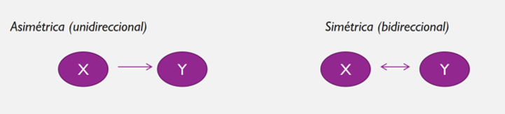
¿Cuál es la variable independiente, cuál es la dependiente, son asimétricas o simétricas?
- Familia politizada incide en politización de estudiante.
- Alta lectura de libros se relaciona con alto consumo de música.
- Buena situación de salud mental mejora el rendimiento académico de estudiantes.
PP: ¿Qué diferencia hay entre una v. dependiente, independiente y de control? De un ejemplo, concreto para cada una de ellas
Mapa de técnicas
El tipo de hipótesis, define el tipo de análisis estadístico que realizaremos
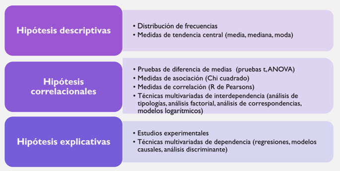
04. Taller en clases
Sobre sus trabajos
Búsqueda booleana
- Tener claros los descriptores de búsqueda (conceptos centrales)
- Leer buscando esos descriptores (leer teoría y material empírico)
- Organizar la información en función de los distintos criterios de búsqueda
- Utilizar DOI (Digital Object Identifier): es un identificador único y permanente para las - publicaciones electrónica
- Búsqueda booleana (en Google Scholar):
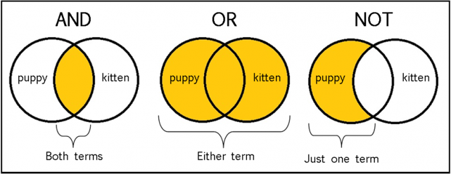
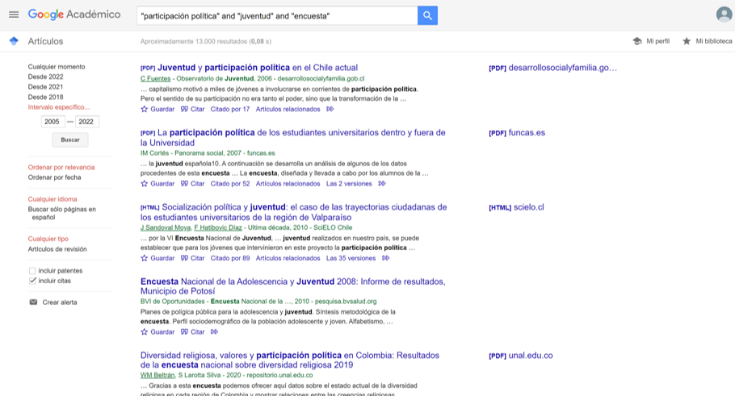
Realicen 2 búsquedas en Google Scholar por persona:FALTA MENTIIIIIIIIIIIIIIIII
anote: a) grupo b) búsqueda [ejemplo: (a) grupo 1; (b) “política” AND “juventud” AND “encuesta”; (c) “política” AND “encuesta” AND “participación”]
A partir de su problema de investigación: Elabore el problema y situé la pregunta al final Determine los objetivos (1 general y 3 o 4 específicos) Postule 2 o 3 hipótesis Señale relevancias